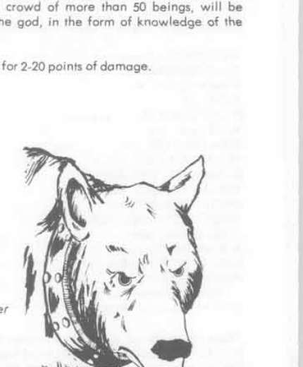

洛基、莫迪 与诸位神祇 · Loki、Modi 与诸位神祇
Loki 是欺诈、火焰与背叛之神，混乱邪恶。他能任意变形、制造幻象并操纵火焰，常以貌似有益的计策破坏 Aesir 的计划。其子女包括 Fenris Wolf、Jormungandr 与 Hel；Loki 最终会率领巨人与死者反抗诸神。
Modi 是愤怒与狂战士之神，混乱中立。他能激起军队的战斗狂热，令受影响者不惧伤痛；祭司常在盾牌上刻下他的符号。Norns——Urd、Verdandi 与 Skuld——掌管过去、现在和未来，连诸神也无法轻易改变她们织成的命运。
Sif 是丰收与谷物女神，也是 Thor 的妻子；她的金发象征成熟麦穗。Thor 是雷霆、力量与勇士之神，混乱善良，持神器战锤 Mjolnir；锤子投出后必然返回，能召来雷电、击退巨人并飞越天空。Thor 的两只神羊 Tanngrisnir 与 Tanngnjostr 拉着战车，夜间会在雷声中穿过云层。
Tyr 是战争、勇气与誓约之神，守护遵守承诺的战士；他失去一只手正是因为以身为代价束缚 Fenris Wolf。Uller 擅长弓术、滑雪与决斗，负责冬季狩猎。Vidar 是沉默与复仇之神，在 Ragnarok 中杀死 Fenris Wolf；他穿着厚重神靴，能踏住巨狼的下颚并将其撕裂。
